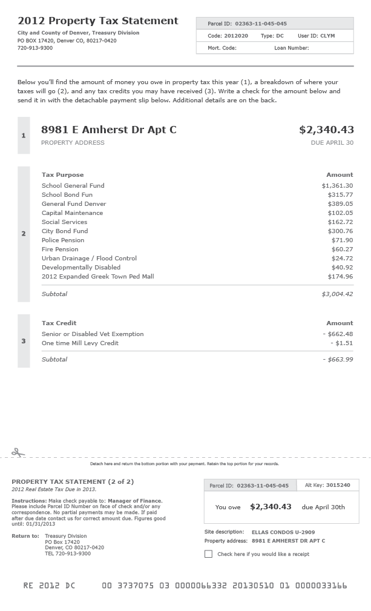
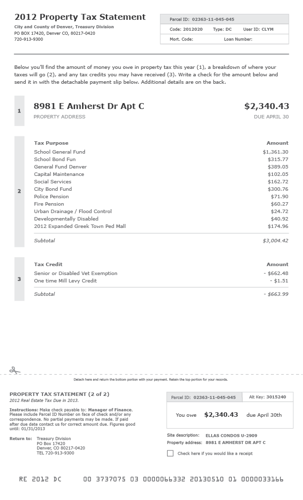

Introduction
This year Becky, Drew, and Kavi worked with the City and County of Denver to develop several small tactical projects to demonstrate the value of open data and good service design to the city and it’s residents.
Team
Projects
2013 Street Sweeping Revenue
The primary goal of Denver Street Sweeping was to create a simple and straightforward tool that would allow residents to learn about street sweeping near them.
- Open Data First: We worked with the City and County of Denver to create an improved street sweeping data set.The previous data was only geospatial and didn’t give address-level detail as to when and where street sweeping would occur in Denver.
- Simple and accessible: The web-app functions on both desktop and mobile devices to accommodate different resident’s needs. We focused on creating a simple interface with clear calls to action to direct users.
- Go to the people: Rather than asking residents to check the website every day, we use email and SMS reminders, to push information to residents.
Denver Street Sweeping was never intended to be the perfect street sweeping app, but rather a demonstration of how Open Data can be used. There are many improvements that could be made such as translation into different languages, maps, printable calendars, and much more.
The Marijuana Data Visualization was created as a way to answer the most common questions people have about marijuana in Denver. It gives a high level look at the data and links to the raw datasets for more in-depth analysis by the reader.
This project demonstrates government transparency. Marijuana was legalized in Denver in January 2014, when our fellowship started. The topic was on the minds of many departments we interviewed as residents, media, and other states called for information and as a result of this project, the city opened several datasets related to the marijuana industry during the year. This dashboards aimed to serve several purposes:
- To demonstrate the value of Open Data.
- To improve transparency between the city and it’s residents.
- To help the city easily track changes in trends in data over time.
- To reduce the time city employees spent crunching data in order to respond to incoming press inquiries.
Cute Pets is a Twitter bot that was created as a way to help the Denver Animal Shelter find homes for adoptable pets and increase it’s live release rate. At it’s inception, the bot scraped data from the city’s Animal Shelter website. Through the work on this project, the vendor created an API to make access to the data easier.
The project is a demonstration of the value of Open Data. Though simple in execution, the bot opens the doors for more advanced animal shelter tools to be made. The bot was built on the principle of taking data to the people. Rather than making potential owners go to a city’s shelter site to find adoptable pets, the bot pushes information to them where they already are online (Twitter).
In this year alone, Cute Pets has been redeployed more than 10 cities across the US including San Antonio, Boston, Norfolk, and Raleigh.
Throughout the year, the team spent a lot of time looking at 311 data, searching for opportunities to improve The City and County of Denver. While looking into the top 311 call topics, Kavi found that ~5.3% of all 311 calls in 2013 were about Property Tax Payment and Property Information. Upon further investigation, Kavi found out that a majority of these calls were from residents trying to read and understand their property tax statements from the city. Kavi spent several months creating a brand new property tax statement, working with the city to incorporate content mandated by city statutes. The city is now hiring a new vendor to send this redesigned statement (or something like it) to residents.

 

There are still too many poorly designed paper artifacts in government. Because of this, Kavi created a quick guide to help any employees improve paper statements and forms in their city.
The 311 Data Visualization is a high level look at the most common 311 calls to the City and County of Denver. The visualization was a small project that helped the fellows examine and understand the city’s 311 open data set. In addition to helping us answer questions like “What are the topics people call about most frequently?” and “What types of cases took the most time to respond to?” there were other goals. We wanted to demonstrate the value of open data and help the city easily track changes in the data over time.

Impact
User Research
Throughout the year we spent many hours speaking with real residents to collect their feedback and understand their problems. In addition to in-person and phone interviews, we took advantage of our unique position to collect feedback in other interesting ways. Kavi got permission from the city to set up a small cookies and lemonade stand in front of the permitting office. There, spoke with many residents who were eager to give their feedback about the city.
Later in the year, Becky and Kavi participated in Cabinet in the Community, a once-quarterly event where city officials from the Mayor’s office gather and meet with Denver residents. The fellows used the opportunity to collect feedback through an interactive exercise. In response, David Edinger had this to say, “I love this exercise and I’m a bit embarrassed that I’ve just been standing there answering questions during the first 10 of them. I’m going to continue to expand on it at future CIC’s.”
We used any opportunity we could find to get a pulse on Denver’s residents whether it was reading the Denver Post or participating in a civic carnival celebrating tax day.

In software engineering when you notice yourself writing the same code over and over it’s good practice to extract the logic for reuse. This way, refinements and modifications in one codebase can benefit another. The result of this process in our case was the Denver Data Visualization Template.
The template started as two separate visual dashboards created by the fellows in 2014. The first represented the city’s 311 call data and the second represented metrics from Denver’s marijuana industry. The style and technology used for both were similar.
Currently, the template is not a true stand alone library that the other projects reference. It’s a place where shared lessons from the projects are collected. It’s a starting place for future projects. Future enhancements will include an upgrade path for existing applications built off of the template.